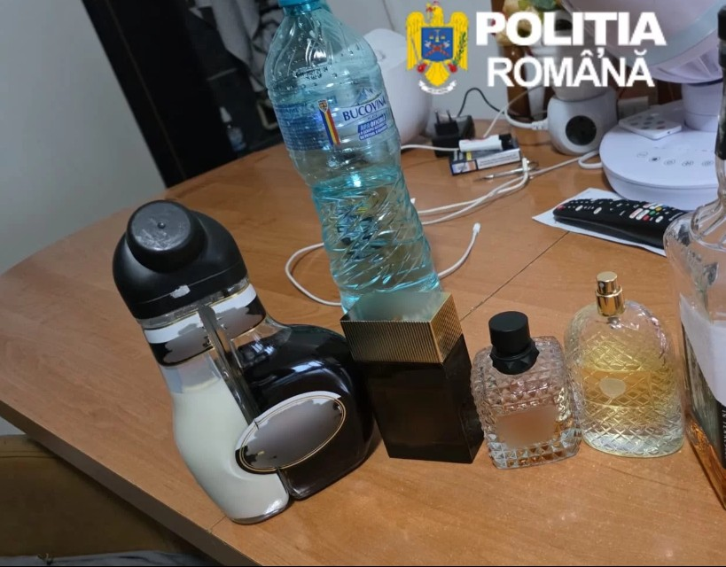

Lovitură pentru polițiștii din Mehedinți într-un dosar de furt calificat comis în urmă cu aproape o lună, la Orșova. Ieri dimineață, oamenii legii au descins la locuințele a trei persoane bănuite că ar fi dat spargerea din care au dispărut bijuterii și bani în valoare de aproximativ 100.000 de euro.
Potrivit IPJ Mehedinți, polițiștii Serviciului de Investigații Criminale, sub coordonarea Parchetului de pe lângă Judecătoria Orșova, au pus în executare trei mandate de percheziție domiciliară la locuințele a doi bărbați și ale unei femei, suspectați de implicare în furt.
Anchetatorii spun că, în noaptea de 11 spre 12 iunie, doi bărbați în vârstă de 52, respectiv 39 de ani, ambii din județul Timiș, prin escaladarea gardului locuinței persoanei vătămate din municipiul Orșova, ar fi pătruns fără drept în locuință, având fețele acoperite cu cagule și în mâini purtând mănuși, transmite IPJ Mehedinți.
Din anchetă a reieșit că suspecții ar fi deschis un seif din care au sustras bijuterii din aur și sume de bani în valoare de aproximativ 100.000 de euro. De asemenea, aceștia ar fi plecat și cu sticle de băuturi alcoolice și parfumuri din locuință.
Pentru a-și ascunde urmele, suspecții „s-ar fi folosit de un autoturism, pe care au montat plăcuțe cu numere de înmatriculare false", mai precizează polițiștii.

În urma percheziițiilor efectuate ieri dimineață, oamenii legii au ridicat mai multe telefoane mobile, sticle de băuturi alcoolice, parfumuri și sume de bani, toate fiind considerate mijloace materiale de probă în dosar.
Totodată, au fost puse în executare două mandate de aducere, iar cei doi bărbați au fost conduși la sediul poliției pentru audieri.
Acțiunea a beneficiat de sprijinul polițiștilor din cadrul IPJ Timiș și al jandarmilor din Gruparea Mobilă de Jandarmi Timiș.
Cercetările continuă pentru săvârșirea infracțiunilor de furt calificat și punerea în circulație a unui autoturism cu numere de înmatriculare false, urmând ca, în funcție de probatoriul administrat, să fie dispuse măsurile legale.
Facem precizarea că, pe întreg parcursul procesului penal, persoanele cercetate beneficiază de drepturile și garanțiile procesuale prevăzute de Codul de procedură penală, precum și de prezumția de nevinovăție.